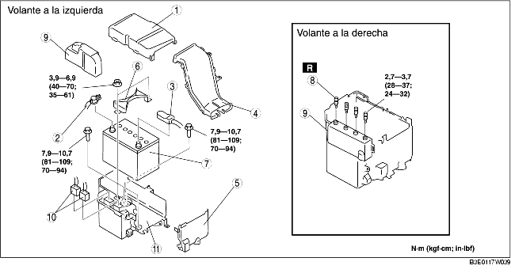

1. Quitar según el orden indicado en la tabla.
2. Instalar en el orden contrario al de la remoción.

.
1. Taladrar los pernos de fijación utilizando una punta de barrena más larga que las espigas hasta que se quiten las cabezas.
2. Limpiar todos las impurezas de los conectores del PCM.
1. Instalar con los ganchos B de la tapa del PCM alineado con los orificios de la caja del PCM.
2. Instalar la tapa del PCM al gancho de la caja del PCM.
1. Introducir la lengüeta de la tapa del PCM en el orificio.
2. Girar hasta que el área F esté paralela. El cableado y la tapa del PCM deben colocarse en el área G.
1. Instalar nuevos pernos de fijación y primero apretarlos temporalmente, luego apretarlos hasta que los cuellos de los pernos se rompan.
1. Montar con los ganchos E de la caja de la batería alineados con los orificios de la bandeja de la batería en dos puntos.
1. Alinear la referencia del panel de separación y la muesca del conducto de la batería, e instalar el conducto de la batería al panel de separación.
1. Instalar el conducto de la batería entre la tapa y la caja de la batería.
2. Instalar con los ganchos A de la tapa de la batería alineados con los orificios de la bandeja de la batería en dos puntos.
3. Instalar con los ganchos D de la tapa de la batería alineados con la brida de la bandeja de la batería en dos puntos.
4. Alinear la tapa de la batería con los ganchos C de la bandeja de la batería en dos puntos.